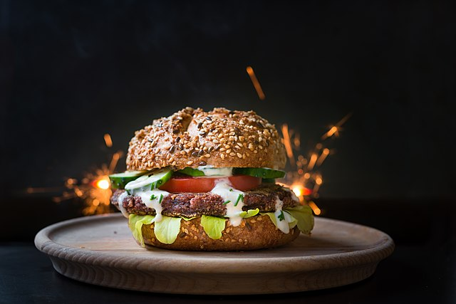

Burgers

Description
Ingredients
- Minced beef
- Bread bun
- Lettuce
- Tomato
- Cheese
- Sauce of choice
Steps
- Press a handfull of the beef into a patty shape
- Cook the patty in a frying pan over a high heat
- Remove the patty to rest, and place the bun cut sides down into the pan to toast
- Remove the bun, place a bed of lettuce on the bottom bread followed by the tomato sliced
- place the patty onto the tomato then lay the cheese over the top
- Spread sauce over the inside of the top bun, then put into the burger to complete